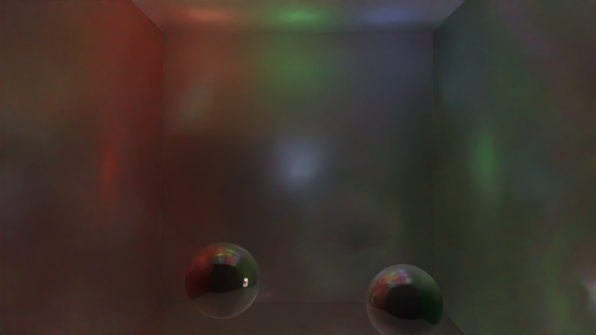
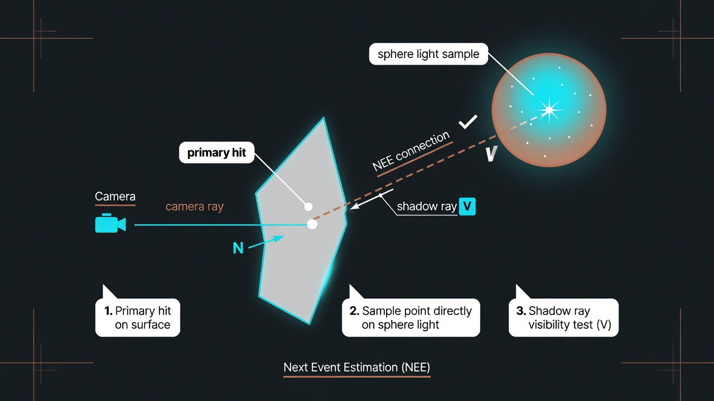
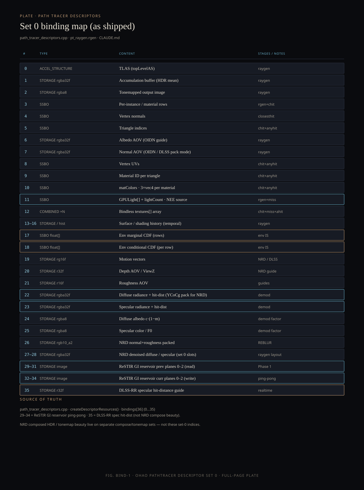

Monograph · 06 · Path tracer
Pipelines · implementation
Path tracer
Document the path tracer as coded in pt_raygen.rgen. The deep section below is a line-anchored walk of the analytic NEE sphere-light branch — every jargon term, formula, and step answers why.
Host lifecycle (before a single ray)
The path tracer is not constructed in VulkanRenderer::initialize. It appears on demand so 4K dual profiles do not OOM.
- Device + TLAS host already exist (Ch. 03)
- Scene uploaded: VB/IB, matColors, lights, bindless,
buildBLASTLAS setRenderMode(RTOffline|RTRealtime)→ensureRTRenderer(mode)- Construct PathTracer;
initdevice/instance/queue; allocate beauty + AOV images for width×height - Create RT pipeline from SPIR-V (raygen/miss/chit/ahit); build SBT
- Create descriptor set (bindings 0–35); bind TLAS, buffers, images, CDFs
- Apply profile settings (bounces, sampler, denoise mode, firefly clamp)
- Per frame / spp: push constants (invView/invProj, sample index, flags) →
traceRays - Optional denoise (Ch. 09); copy to staging / present
- Camera move →
resetAccumulation/ notify view changed
Each PathTracer holds full-resolution HDR + many AOVs. Offline + realtime at once at 4K exhausted 8 GiB (Fox.glb hang). Lazy create + 1080p default fixed it.
Integrator math (NEE walk below) only runs after this host path succeeds.
Visual plates

Real engine output
Cornell box beauty. Exported from ./build/cornell_box @ 16 spp + OIDN — not AI art.

Conceptual illustration — not engine output NEE idea sketch. Grok Imagine diagram for intuition only; shading below is from real GLSL.
Role
PathTracer is the physical image-formation path for
RTOffline / RTRealtime. It estimates the rendering
equation by shooting rays, connecting to lights, and accumulating samples.
The balance of light leaving a surface point: emission plus the integral of incoming light weighted by the BRDF and the cosine to the normal. Path tracing estimates that integral with random samples instead of solving it analytically.
It is the definition of “correct” lighting for opaque surfaces. Offline profiles chase it with more bounces and better samplers; realtime profiles approximate it under a time budget.
Integrator stages
Primary + first hit + direct NEE
Camera ray, material unpack, AOV write, then analytic light connection (this chapter’s deep walk).
Specular indirect chain
GGX-oriented bounces; NEE/env attribute to specContrib.
Diffuse indirect chain
Cosine hemisphere; contributions to diffContrib.
Denoisers (NRD/DLSS) need separate diffuse and specular statistics and hit distances. One mixed path makes demodulation ambiguous.
Deep walk · NEE sphere branch
Source: shaders/rt/pt_raygen.rgen lines 304–435
(304 = comment; analytic direct NEE body 305–435). We walk the sphere light
branch only (lightType < 0.5 at L327), the general solid-angle case.
Instead of hoping a random bounce hits a light, we explicitly sample a point on a light and cast a shadow ray to test visibility. That direct connection is the “next event.” Without NEE, small bright lights are almost never hit by pure BSDF sampling → noisy or black direct lighting.
How likely a continuous random choice was. Monte Carlo divides the contribution by the PDF so rare samples are not under-counted and common samples are not over-counted. Units matter: solid-angle vs area measures must match.
The running product of “how much light survives” along a path (BRDF × cosine / PDF factors). At bounce 0 after the primary hit, throughput is still 1 before we multiply the direct term.
When two strategies can sample the same light path (e.g. “sample the light” vs “sample the BRDF”), MIS blends them with weights from their PDFs so neither strategy alone blows variance. Sphere NEE at bounce 0 here uses explicit light pick + count factor; env sampling nearby uses power/balance heuristics (Ch. 07).
Step 1 · Pick a light uniformly
Line 304 is only the section comment. The branch starts at 305: if any lights exist, pick one index with a 1D sample (306), advance the sampler dim (307), clamp (308), load GPULight (310).
304// ==== Analytic direct NEE at bounce 0 ==== 305if (lightBuf.lightCount > 0u) { 306 uint selectedLightIdx = uint(getSample1D(dimIdx) * float(lightBuf.lightCount)); 307 dimIdx += 1u; 308 selectedLightIdx = min(selectedLightIdx, lightBuf.lightCount - 1u); 310 GPULight light = lightBuf.lights[selectedLightIdx];
Simple and unbiased given a later ×NL factor. Smarter light picking (power-proportional) is a future variance win; uniform is correct and easy to validate.
Step 2 · Decode light + emission density
Read type, center, color, intensity, radius. Sphere surface area \(A=4\pi r^{2}\). Convert artist “color×intensity” into radiance density \(L_e\) by dividing by area so bigger spheres are not infinitely brighter per steradian.
312float lightType = light.positionAndType.w; 313vec3 lightCenter = light.positionAndType.xyz; 314vec3 lightColor = light.colorAndIntensity.rgb; 315float lightIntensity = light.colorAndIntensity.w; 316float lightRadius = light.dirAndParam.w; 320float r = max(lightRadius, 0.01); 321float area = 4.0 * 3.14159 * r * r; 322vec3 Le = lightColor * lightIntensity / max(area, 0.01);
We will later multiply by the geometry term that includes area. Keeping \(L_e\) as “radiance-like density” matches the sphere surface sampling measure. The 0.01 floors avoid division by zero for degenerate radii.
Step 3 · Sphere branch: sample surface point
Only when lightType < 0.5 (sphere). Uniform sample on the unit sphere, scale by radius, form light point and outward normal (radial). Direction \(L\) from hit to that point; weight uses foreshortening on the light and inverse-square.
327if (lightType < 0.5) { 328 vec2 u12 = getSample2D(dimIdx); dimIdx += 2u; 330 float cosTheta = 1.0 - 2.0 * u1; 331 float sinTheta = sqrt(max(0.0, 331 1.0 - cosTheta*cosTheta)); 332 float phi = 6.2831853 * u2; 334 vec3 offset = vec3(sinTheta*cos(phi), 334 sinTheta*sin(phi), cosTheta) * r; 335 vec3 lightPoint = lightCenter + offset; 336 vec3 lightNormal = normalize(offset); 337 vec3 toLight = lightPoint - hitPos; 338 float lightDist = length(toLight); 339 L = toLight / lightDist; 340 float lightCos = max(dot(-L, lightNormal), 0.0); 341 float lightArea = 4.0*3.14159*r*r; 342 weight = lightCos * lightArea / (lightDist * lightDist); // ÷ d² 343 shadowDist = lightDist - 0.02; 344}
Sphere radius is \(r\) (used only in \(A=4\pi r^{2}\)). Distance to the sample is \(d=\texttt{lightDist}\). GLSL divides by lightDist * lightDist — never by \(r^{2}\).
How big a surface patch looks from the shading point. The factor \(A\,|\cos|/d^{2}\) with distance \(d=\|y-x\|\) (not the sphere radius \(r\)) converts a uniform area sample into solid-angle measure. If the back of the sphere faces you, \(\cos\le0\) and weight is zero — no contribution from that hemisphere of the light surface.
Implementation simplicity and a single code path. The \(\max(\mathbf{n}_L\cdot(-\omega),0)\) kills back-facing samples. Visible-disk sampling would lower variance but needs more geometry math; this branch prioritizes correctness and readability.
Trace slightly short of the light surface so the ray does not self-hit the light geometry as an “occluder.” Epsilon tradeoff: too large → light leaks/gaps; too small → acne.
Step 4 · Shadow ray (visibility)
Only if surface faces the light (NdotL > 0) and weight is positive. Trace with terminate-on-first-hit and skip closest-hit for speed. Miss convention: payload.hitDist < 0 means visible.
385float NdotL = max(dot(N, L), 0.0); 387if (NdotL > 0.0 && weight > 0.0) { 388 payload.hitDist = 999.0; 389 traceRayEXT(topLevelAS, 390 TerminateOnFirstHit | Opaque 390 | SkipClosestHit, 392 hitPos + N*0.01, 0.001, L, shadowDist, 0);
TerminateOnFirstHit stops at the first occluder — we only need yes/no visibility. SkipClosestHit skips material shading on the occluder — pure intersection test. Origin bias \(N\cdot 0.01\) reduces self-shadow acne on the shading surface.
Step 5 · BRDF × light × weight × N_L
On miss (visible), evaluate microfacet GGX specular + Lambert diffuse, multiply by \(L_e\), \(N\cdot L\), geometry weight, and light count. Split into demod diffuse/specular for NRD. Optional firefly clamp in realtime.
409vec3 spec = D*F*G / (4*NdotV*NdotL + eps); 411vec3 diff = kD * albedo / PI; 414vec3 direct = 414 Le * (diff+spec) * NdotL * weight 414 * float(lightBuf.lightCount); 419radiance += direct; 422vec3 neeCommon = Le * NdotL * weight 422 * float(lightBuf.lightCount); 423diffContrib += neeCommon * diff; 424specContrib += neeCommon * spec;
We picked one light with probability \(1/N_L\). Unbiased estimators divide by the PDF of the discrete choice — equivalent to multiplying by \(N_L\). Forget this factor and the scene is \(N_L\times\) too dark.
Same NEE sample feeds two AOV buckets so REBLUR/DLSS can denoise lobes separately. Beauty still sums both.
Directional (type < 1.5): fixed direction, weight=1, long shadow. Spot: sphere-like sample × cone falloff². Area: bilinear on edge1×edge2. Same shadow + BRDF tail.
Full-page binding plate

Descriptor set 0. Shipped bindings 0–35 from path_tracer_descriptors.cpp (ReSTIR 29–34, DLSS-RR hit-dist 35).
Source map
shaders/rt/pt_raygen.rgenNEE L304–435 · stages A/B/Cpath_tracer_descriptors.cppBinding layoutgpu_light.hpp80-byte light structrt_settings.hpp / rt_meta.hppProfiles · traitsDesign units in this module
Each card is a focused design page (what / how / why + sources). Full tree: Sitemap.
Host lifecycle
ensureRTRenderer, images, pipeline, SBT, descriptors.
Profiles & meta
RTRenderSettings, Realtime vs Offline traits.
Acceleration structures
BLAS/TLAS API, rebuild vs update.
Raygen integrator
Stages A/B/C, NEE, dual-lobe, AOV writes.
Hit & miss shaders
closesthit materials, anyhit alpha, miss env.
Descriptor map 0–35
Full set-0 layout including ReSTIR 29–34 and DLSS hit-dist 35.
ReSTIR GI reservoirs
Ping-pong reservoir planes on bindings 29–34.